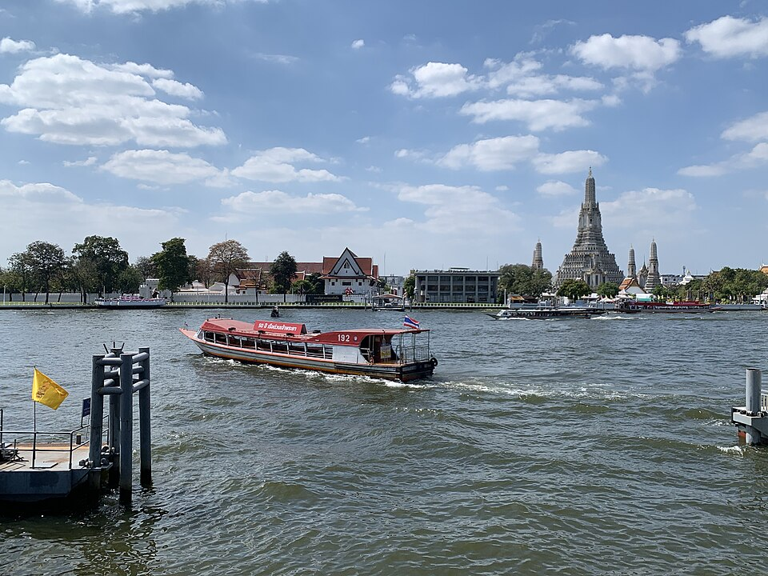
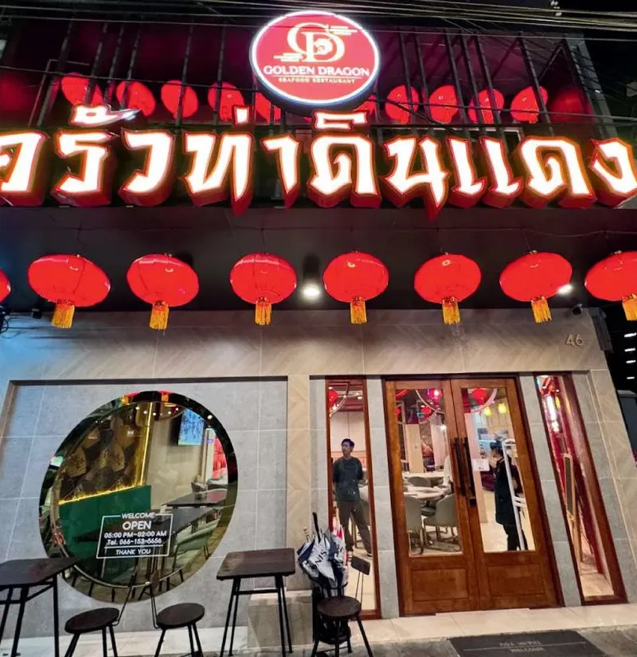
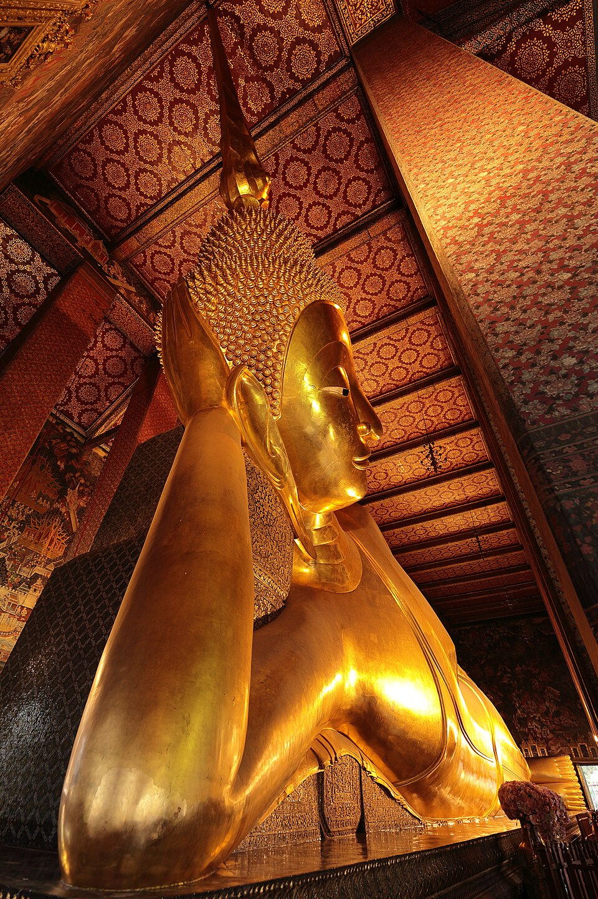

เดินเที่ยวมรดกไชน่าทาวน์ ข้ามเรือ 5 บาท
เส้นทางครึ่งวัน 8 จุด: ศาลเจ้ากวนอูฝั่งเรา → เรือข้ามฟาก → สำเพ็ง → เล่งเน่ยยี่ → ทรงวาด → ตลาดน้อย → มื้อค่ำเยาวราช พร้อมของกินมรดกและมารยาท 4 ศาสนา
อ่านไกด์ฉบับเต็มเที่ยวย่านนี้
4 🗺️
🗺️เที่ยวฝั่งธนฯ 1 วันเต็ม
เส้นทางเช้าจรดค่ำ: ตลาดเช้า → วัดอรุณ → กุฎีจีน → สวนลอยฟ้า → ICONSIAM → เยาวราช
อ่านไกด์
🍜กิน-เที่ยวรอบซอยท่าดินแดง
13 ร้านที่คนพื้นที่กินจริง + เส้นทางเดิน 10 จุดที่นักท่องเที่ยวส่วนใหญ่หาไม่เจอ
อ่านไกด์
🛕เที่ยวอะไรใกล้ที่พัก
9 จุดเที่ยวหลัก — สวนลอยฟ้า ICONSIAM วัดอรุณ เยาวราช พร้อมปุ่มนำทางจากที่พัก
อ่านไกด์ 🐉
🐉ที่พักใกล้เยาวราช
ข้ามสะพานเดียวถึงไชน่าทาวน์ กินตอนค่ำกลับดึกสะดวก ย่านเราเงียบนอนสบาย
อ่านไกด์ตามเทศกาล
2
ข้อมูลก่อนมาพัก
2

ไม่เจอเรื่องที่อยากรู้?
ทักถามเราได้เลย — ร้านที่เปิดวันนี้ วิธีไปที่ไหนก็ได้ เวลาเรือ หรือขอให้วงแผนที่วาดมือให้ เราคนพื้นที่ ตอบไวมาก